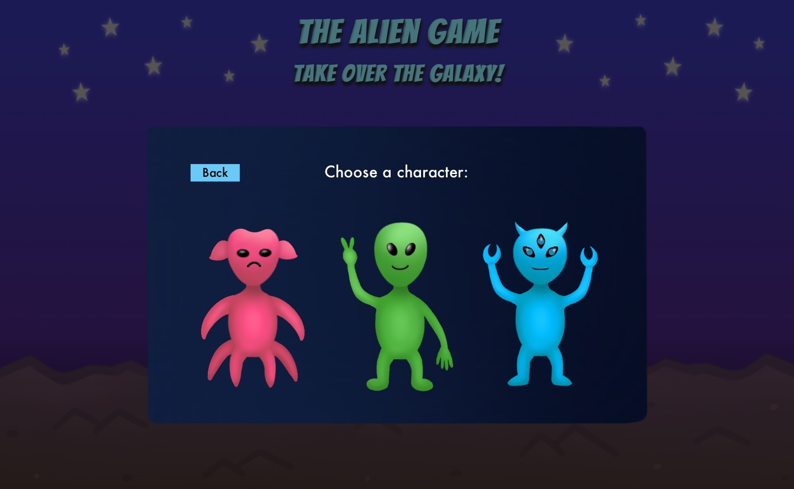
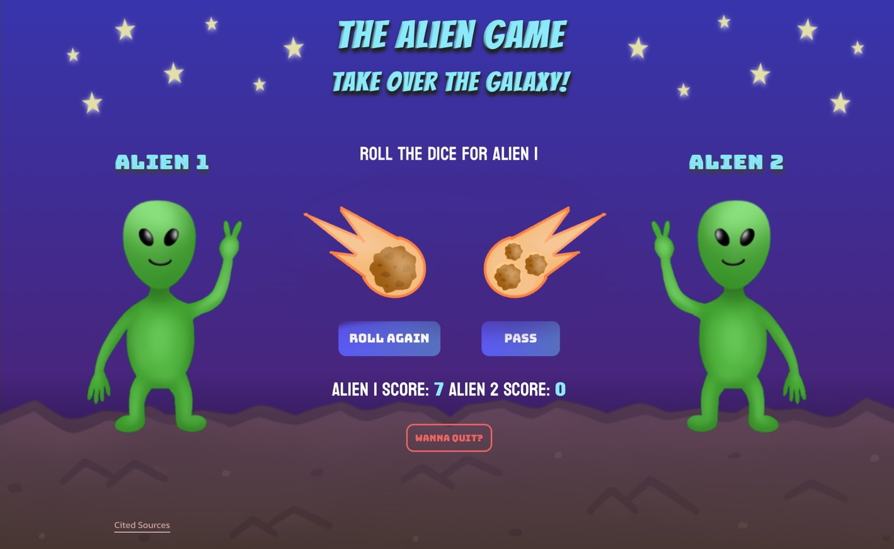
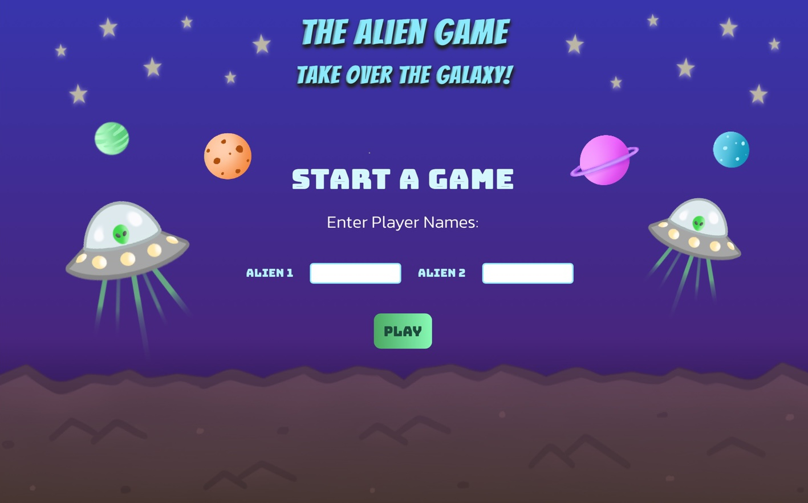

Visual Design Comp #1: Character Panel
Since I am focusing on improving my visual design for the Game On! project, I wanted to add some more illustrative details to the game elements and background that relate to the alien theme. My first design comp displays an overlay with additional characters for the user to choose from. This will appear on the starting page before the gameplay. I created variations of aliens so that the user could have more fun playing as a character that best suits them.
Visual Design Comp #2: Meteor Dice
For my second design comp, I drew a new game element that would replace the pre-existing dice for the original game. To make the story to the game more interesting, I decided to create meteors of different numbers to replace the dice. I will most likely be changing the dice rolling sounds to fire noises as well. This ties in cohesively to the space theme and is visually more interesting than regular dice.
Visual Design Comp #3: Background Details
Lastly, my third design comp shows added UFO spaceships and planets in the background to the starter page. I could potentially add even more creatures in the background if I have more time. Overall, I plan to animate these objects to move around infinitely so that while the user is filling out the name prompts, it keeps them interested in wanting to play the game.